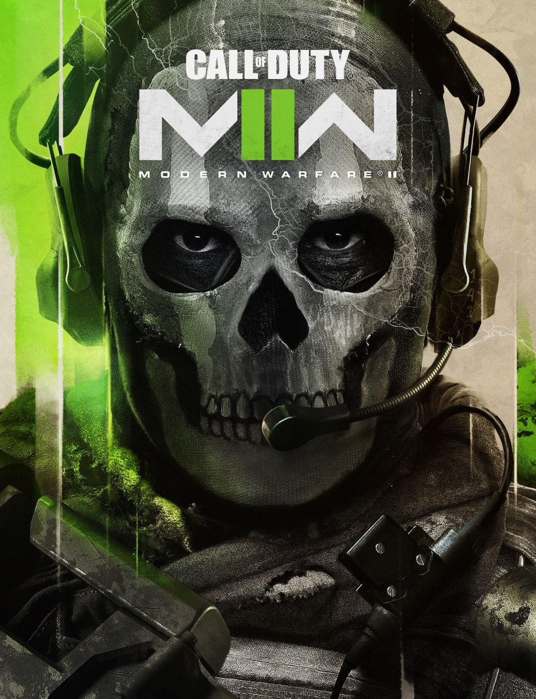

Call of Duty: Modern Warfare II

Call of Duty: Modern Warfare II is a first-person shooter that is the sequel
to 2019's Call of Duty: Modern Warfare. The plot of the game revolves around
a global conflict involving legendary performers from OTG-141. Large-scale
single player campaign will take you to different parts of the world. Missions
will range from small but critical tactical strikes to top-secret operations.
In addition to the single player mode, you will also have access to exciting
online modes and story-based special operations designed for co-op.